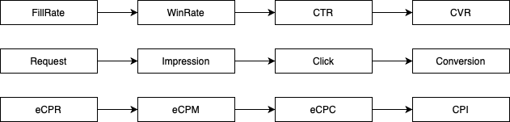

<!DOCTYPE html>
<html lang="en">

<head>
  <meta charset="utf-8" />
    
  <meta name="description" content="......" />
  
  <meta name="viewport" content="width=device-width, initial-scale=1, maximum-scale=1" />
  <title>
    DspBaseThinking |  Bugxyb 的闲话时间
  </title>
  <meta name="generator" content="hexo-theme-yilia-plus">
  
  <link rel="shortcut icon" href="/favicon.ico" />
  
  
<link rel="stylesheet" href="/css/style.css">

  
<script src="/js/pace.min.js"></script>


  

  

</head>

</html>

<body>
  <div id="app">
    <main class="content">
      <section class="outer">
  <article id="post-2020-03-15-DspBaseThinking" class="article article-type-post" itemscope
  itemprop="blogPost" data-scroll-reveal>

  <div class="article-inner">
    
    <header class="article-header">
       
<h1 class="article-title sea-center" style="border-left:0" itemprop="name">
  DspBaseThinking
</h1>
  

    </header>
    

    
    <div class="article-meta">
      <a href="/2020/03/15/2020-03-15-DspBaseThinking/" class="article-date">
  <time datetime="2020-03-14T17:16:55.000Z" itemprop="datePublished">2020-03-15</time>
</a>
      
  <div class="article-category">
    <a class="article-category-link" href="/categories/Thinking/">Thinking</a>
  </div>

      
      
<div class="word_count">
    <span class="post-time">
        <span class="post-meta-item-icon">
            <i class="ri-quill-pen-line"></i>
            <span class="post-meta-item-text"> 字数统计:</span>
            <span class="post-count">835字</span>
        </span>
    </span>

    <span class="post-time">
        &nbsp; | &nbsp;
        <span class="post-meta-item-icon">
            <i class="ri-book-open-line"></i>
            <span class="post-meta-item-text"> 阅读时长≈</span>
            <span class="post-count">3分钟</span>
        </span>
    </span>
</div>

      
    </div>
    

    
    
    <div class="tocbot"></div>


    

    <div class="article-entry" itemprop="articleBody">
      


      

      
      <h1 id="DSP的思考——流程和评估"><a href="#DSP的思考——流程和评估" class="headerlink" title="DSP的思考——流程和评估"></a>DSP的思考——流程和评估</h1><p>大概做了这么久相关程序化交易和DSP的平台，大概摸清了其流程，从而可以根据流程来进行处理和优化。<br><strong>在程序化交易的大流量时代，出现交易的不对称情况，即CPI和CPM购入的不一致性。</strong><br>流量端基本以CPM（展示计费）的方式进行出售，而广告主端只想通过CPI（安装或者后续计费）来进行结算。<br>所以CPM-CPI的转换结算出现，即DSP平台的。通过CPM来购买流量，同时以CPI的方式来与广告主端结算。这也是程序化交易中最难的一块。</p>
<a id="more"></a>

<p></p>
<h2 id="流程"><a href="#流程" class="headerlink" title="流程"></a>流程</h2><p>程序化交易中流量的流程如下（上图为简化版本）:</p>
<ul>
<li>Request 请求，发送请求</li>
<li>Response 响应，响应请求</li>
<li>Impression(Win) 竞价成功，同时出展示</li>
<li>Click 点击</li>
<li>Conversion 转化</li>
<li>Action Event 后续事件</li>
</ul>
<p>在DSP中，主要是需要做好如下操作，针对每次流量展示请求，进行广告响应，从而消耗一定预算的情况下，获得较优的收益行为</p>
<ul>
<li>Request Filter 流量过滤</li>
<li>Bid Landscape 出价</li>
<li>Index/Ranking 索引和排序</li>
</ul>
<h2 id="流程购买"><a href="#流程购买" class="headerlink" title="流程购买"></a>流程购买</h2><p>在DSP中，受GDPR和CPPA的影响，上报最细粒度的只有一个IFA信息，标明用户，获取不了其他的信息。<br>所以在没有DMP的支持下，现阶段DSP（ADX）会以Bundle+Country+AdType+AdSzie的方式进行流量的批量采买。</p>
<h2 id="流程转化"><a href="#流程转化" class="headerlink" title="流程转化"></a>流程转化</h2><p>知道了流量的流程后，就像沙漏一样从Request-Response-Impression-Click-Conversion达到最后目标。<br>其中:</p>
<ul>
<li>Request-Response FillRate 填充率（DSP进行控制）</li>
<li>Response-Impression（Win） WinRate 竞价成功率（通过出价和其他竞价获取）</li>
<li>Impression-Click CTR 点击率（取决于广告和素材）</li>
<li>Click-Conversion 转化率</li>
</ul>
<p>在DSP中，可以直接控制FillRate的比例，同时通过出价的情况来预估WinRate比例，从而可以控制从Request-Impression的过程，即可以通过流量情况，控制FillRate和WinRate来预估出获取的大概展示。<br>之后则是需要通过流量效果来进行评估和购买，即CTR和CVR</p>
<h2 id="评估"><a href="#评估" class="headerlink" title="评估"></a>评估</h2><p>说到评估，需要知道的是：</p>
<ol>
<li>eCPM是DSP的出价单价，所以这个值是固定的。</li>
<li>eCPR 千次请求的开销，这个取决于FillRate和WinRate，而对于DSP而言出价是消耗，所以无需考虑，但是对ADX而言，因为流量的收益问题，eCPR的指标将是流水的指标之一(这流量可以带来多少收益）</li>
<li>eCPC 千次点击的开销，受CTR直接影响，在点击和转化还没起来之前，这个指标将是第一指标：<strong>只有当点击大规模起来后，转化也会跟着提升起来</strong></li>
<li>CPI 一个转化的开销，和单子的单价差值形成了利润，受CVR直接影响。整个DSP的最终目标就是优化流程，使争取大量的转化时候，CPI达到最优值。</li>
</ol>
<p>因为出现了以CTR和CVR才能对流量进行评估，使得在广告算法中，CTR/CVR预估格外重要，机器学习也能运用上</p>
<h2 id="其它"><a href="#其它" class="headerlink" title="其它"></a>其它</h2><p>大概只是简单聊了下经验和认知分享出来，后续还有很长的一段路要走</p>

      
      <!-- reward -->
      
    </div>
      <!-- copyright -->
      
    <footer class="article-footer">
      
      
  <ul class="article-tag-list" itemprop="keywords"><li class="article-tag-list-item"><a class="article-tag-list-link" href="/tags/RTB/" rel="tag">RTB</a></li></ul>


    </footer>

  </div>

  
  
  <nav class="article-nav">
    
      <a href="/2020/03/15/2020-03-15-LeetCodeWeeklyContest180/" class="article-nav-link">
        <strong class="article-nav-caption">上一篇</strong>
        <div class="article-nav-title">
          
            LeetCodeWeeklyContest180
          
        </div>
      </a>
    
    
      <a href="/2020/03/08/LeetCodeWeeklyContest179/" class="article-nav-link">
        <strong class="article-nav-caption">下一篇</strong>
        <div class="article-nav-title">LeetCodeWeeklyContest179</div>
      </a>
    
  </nav>


  

  
  
<!-- valine评论 -->
<div id="vcomments-box">
    <div id="vcomments">
    </div>
</div>
<script src="//cdn1.lncld.net/static/js/3.0.4/av-min.js"></script>
<script src='https://cdn.jsdelivr.net/npm/valine@1.3.10/dist/Valine.min.js'></script>
<script>
    new Valine({
        el: '#vcomments',
        app_id: '',
        app_key: '',
        path: window.location.pathname,
        notify: 'false',
        verify: 'false',
        avatar: 'mp',
        placeholder: '给我的文章加点评论吧~',
        recordIP: true
    });
    const infoEle = document.querySelector('#vcomments .info');
    if (infoEle && infoEle.childNodes && infoEle.childNodes.length > 0) {
        infoEle.childNodes.forEach(function (item) {
            item.parentNode.removeChild(item);
        });
    }
</script>
<style>
    #vcomments-box {
        padding: 5px 30px;
    }

    @media screen and (max-width: 800px) {
        #vcomments-box {
            padding: 5px 0px;
        }
    }

    #vcomments-box #vcomments {
        background-color: #fff;
    }

    .v .vlist .vcard .vh {
        padding-right: 20px;
    }

    .v .vlist .vcard {
        padding-left: 10px;
    }
</style>

  

  
  
  

</article>
</section>
      <footer class="footer">
  <div class="outer">
    <ul class="list-inline">
      <li>
        &copy;
        2020
        Bugxyb
      </li>
      <li>
        
      </li>
    </ul>
    <ul class="list-inline">
      <li>
        
      </li>
      <li>
        <!-- cnzz统计 -->
        
      </li>
    </ul>
  </div>
</footer>
    <div class="to_top">
        <div class="totop" id="totop">
  <i class="ri-arrow-up-line"></i>
</div>
      </div>
    </main>
      <aside class="sidebar">
        <button class="navbar-toggle"></button>
<nav class="navbar">
  
  <ul class="nav nav-main">
    
    <li class="nav-item">
      <a class="nav-item-link" href="/">主页</a>
    </li>
    
    <li class="nav-item">
      <a class="nav-item-link" href="/archives">归档</a>
    </li>
    
    <li class="nav-item">
      <a class="nav-item-link" href="/categories">分类</a>
    </li>
    
    <li class="nav-item">
      <a class="nav-item-link" href="/tags">Tags</a>
    </li>
    
    <li class="nav-item">
      <a class="nav-item-link" href="/aboutme/index.html">关于我</a>
    </li>
    
    <li class="nav-item">
      <a class="nav-item-link" href="/mySetup/index.html">我的配置</a>
    </li>
    
    <li class="nav-item">
      <a class="nav-item-link" href="/repo/index.html">工具仓库</a>
    </li>
    
    <li class="nav-item">
      <a class="nav-item-link" href="/website/index.html">外链站点</a>
    </li>
    
  </ul>
</nav>
<nav class="navbar navbar-bottom">
  <ul class="nav">
    <li class="nav-item">
      
      <a class="nav-item-link nav-item-search"  title="搜索">
        <i class="ri-search-line"></i>
      </a>
      
      
    </li>
  </ul>
</nav>
<div class="search-form-wrap">
  <div class="local-search local-search-plugin">
  <input type="search" id="local-search-input" class="local-search-input" placeholder="Search...">
  <div id="local-search-result" class="local-search-result"></div>
</div>
</div>
      </aside>
      <div id="mask"></div>

<!-- #reward -->
<div id="reward">
  <span class="close"><i class="ri-close-line"></i></span>
  <p class="reward-p"><i class="ri-cup-line"></i></p>
  <div class="reward-box">
    
    
  </div>
</div>
      
<script src="/js/jquery-2.0.3.min.js"></script>


<script src="/js/jquery.justifiedGallery.min.js"></script>


<script src="/js/lazyload.min.js"></script>


<script src="/js/busuanzi-2.3.pure.min.js"></script>


<script src="/js/share.js"></script>


<script src="/fancybox/jquery.fancybox.min.js"></script>


<script>
  try {
    var typed = new Typed("#subtitle", {
    strings: ['技术、学习','话剧、剧集、电影','游戏'],
    startDelay: 0,
    typeSpeed: 200,
    loop: true,
    backSpeed: 100,
    showCursor: true
    });
  } catch (err) {
  }
  
</script>


<script src="/js/tocbot.min.js"></script>

<script>
  // Tocbot_v4.7.0  http://tscanlin.github.io/tocbot/
  tocbot.init({
    tocSelector: '.tocbot',
    contentSelector: '.article-entry',
    headingSelector: 'h1, h2, h3, h4, h5, h6',
    hasInnerContainers: true,
    scrollSmooth: true,
    scrollContainer:'main',
    positionFixedSelector: '.tocbot',
    positionFixedClass: 'is-position-fixed',
    fixedSidebarOffset: 'auto',
    onClick: (e) => {
      $('.toc-link').removeClass('is-active-link');
      $(`a[href=${e.target.hash}]`).addClass('is-active-link');
      $(e.target.hash).scrollIntoView();
      return false;
    }
  });
</script>


<script>
  var ayerConfig = {
    mathjax: false
  }
</script>


<script src="/js/ayer.js"></script>


<script src="https://cdn.jsdelivr.net/npm/jquery-modal@0.9.2/jquery.modal.min.js"></script>
<link rel="stylesheet" href="https://cdn.jsdelivr.net/npm/jquery-modal@0.9.2/jquery.modal.min.css">


<!-- Root element of PhotoSwipe. Must have class pswp. -->
<div class="pswp" tabindex="-1" role="dialog" aria-hidden="true">

    <!-- Background of PhotoSwipe. 
         It's a separate element as animating opacity is faster than rgba(). -->
    <div class="pswp__bg"></div>

    <!-- Slides wrapper with overflow:hidden. -->
    <div class="pswp__scroll-wrap">

        <!-- Container that holds slides. 
            PhotoSwipe keeps only 3 of them in the DOM to save memory.
            Don't modify these 3 pswp__item elements, data is added later on. -->
        <div class="pswp__container">
            <div class="pswp__item"></div>
            <div class="pswp__item"></div>
            <div class="pswp__item"></div>
        </div>

        <!-- Default (PhotoSwipeUI_Default) interface on top of sliding area. Can be changed. -->
        <div class="pswp__ui pswp__ui--hidden">

            <div class="pswp__top-bar">

                <!--  Controls are self-explanatory. Order can be changed. -->

                <div class="pswp__counter"></div>

                <button class="pswp__button pswp__button--close" title="Close (Esc)"></button>

                <button class="pswp__button pswp__button--share" style="display:none" title="Share"></button>

                <button class="pswp__button pswp__button--fs" title="Toggle fullscreen"></button>

                <button class="pswp__button pswp__button--zoom" title="Zoom in/out"></button>

                <!-- Preloader demo http://codepen.io/dimsemenov/pen/yyBWoR -->
                <!-- element will get class pswp__preloader--active when preloader is running -->
                <div class="pswp__preloader">
                    <div class="pswp__preloader__icn">
                        <div class="pswp__preloader__cut">
                            <div class="pswp__preloader__donut"></div>
                        </div>
                    </div>
                </div>
            </div>

            <div class="pswp__share-modal pswp__share-modal--hidden pswp__single-tap">
                <div class="pswp__share-tooltip"></div>
            </div>

            <button class="pswp__button pswp__button--arrow--left" title="Previous (arrow left)">
            </button>

            <button class="pswp__button pswp__button--arrow--right" title="Next (arrow right)">
            </button>

            <div class="pswp__caption">
                <div class="pswp__caption__center"></div>
            </div>

        </div>

    </div>

</div>

<link rel="stylesheet" href="https://cdn.jsdelivr.net/npm/photoswipe@4.1.3/dist/photoswipe.min.css">
<link rel="stylesheet" href="https://cdn.jsdelivr.net/npm/photoswipe@4.1.3/dist/default-skin/default-skin.css">
<script src="https://cdn.jsdelivr.net/npm/photoswipe@4.1.3/dist/photoswipe.min.js"></script>
<script src="https://cdn.jsdelivr.net/npm/photoswipe@4.1.3/dist/photoswipe-ui-default.min.js"></script>

<script>
    function viewer_init() {
        let pswpElement = document.querySelectorAll('.pswp')[0];
        let $imgArr = document.querySelectorAll(('.article-entry img:not(.reward-img)'))

        $imgArr.forEach(($em, i) => {
            $em.onclick = () => {
                // slider展开状态
                // todo: 这样不好，后面改成状态
                if (document.querySelector('.left-col.show')) return
                let items = []
                $imgArr.forEach(($em2, i2) => {
                    let img = $em2.getAttribute('data-idx', i2)
                    let src = $em2.getAttribute('data-target') || $em2.getAttribute('src')
                    let title = $em2.getAttribute('alt')
                    // 获得原图尺寸
                    const image = new Image()
                    image.src = src
                    items.push({
                        src: src,
                        w: image.width || $em2.width,
                        h: image.height || $em2.height,
                        title: title
                    })
                })
                var gallery = new PhotoSwipe(pswpElement, PhotoSwipeUI_Default, items, {
                    index: parseInt(i)
                });
                gallery.init()
            }
        })
    }
    viewer_init()
</script>


<script type="text/javascript" src="https://js.users.51.la/20544303.js"></script>
  </div>
</body>

</html>